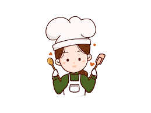

Nuestra Misión
"Crecer gradualmente de un pequeño emprendimiento a empresa, para ser generadores de empleo y proveer pasteleria de calidad a un precio comodo y "
Sobre nosotros

Kcup's es un emprendimiento familiar, soñado e ideado en sus comienzos por Martha Cortes a quien se le unieron sus hijas con gran entusiasmo, empuje e ideas nuevas, además de su amor por la cocina. Dicho emprendimiento nacio en el año 2005 cuando surgió la idea de preparar una mesa dulce para el bautismo de la hija de un familiar, donde todos los comensales quedaron encantados con los resultados de los productos.